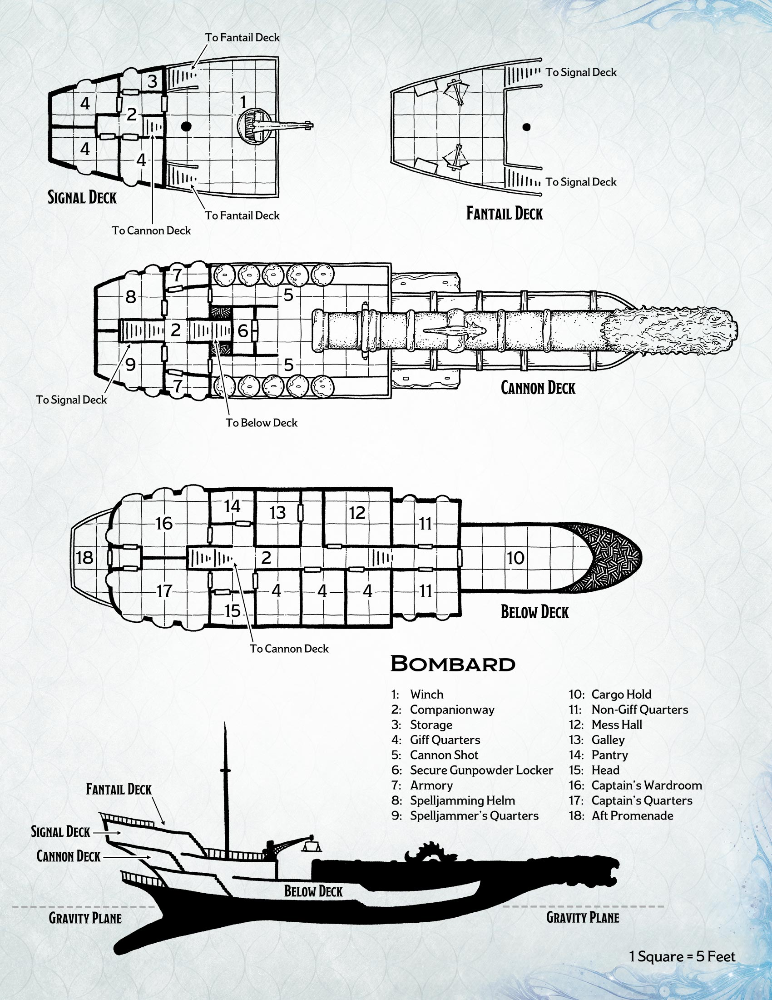

<p>le navi bombarda sono caratterisitche dei giff. Lente e pesanti, sono solitamente armate di una bombarda enorme, in
    grado di polverizzare intere navi con un singolo colpo. Sono solitamente dei galeoni modificati, anche se il peso
    aggiunto della bombarda rende impossibile la navigazione su acqua. Il cannone può sparare con precisione anche a
    oltre 2400 piedi di distanza, anche se richiede che la nave sia puntata nella direzione del bersaglio.</p>
